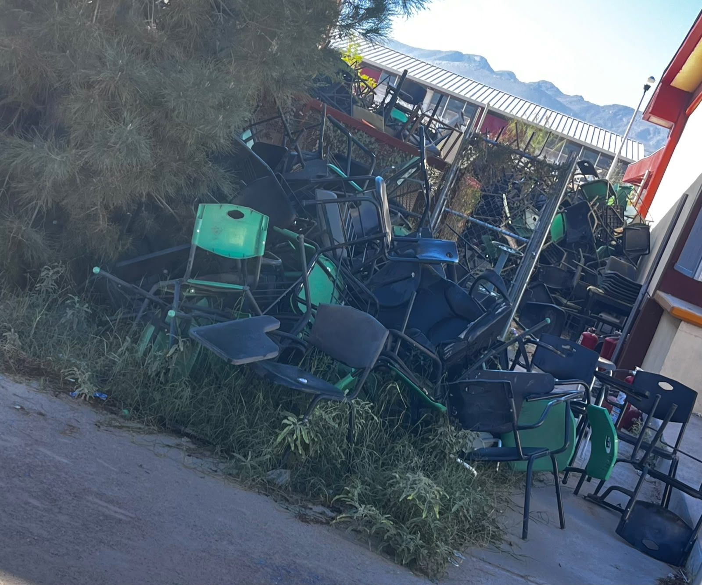
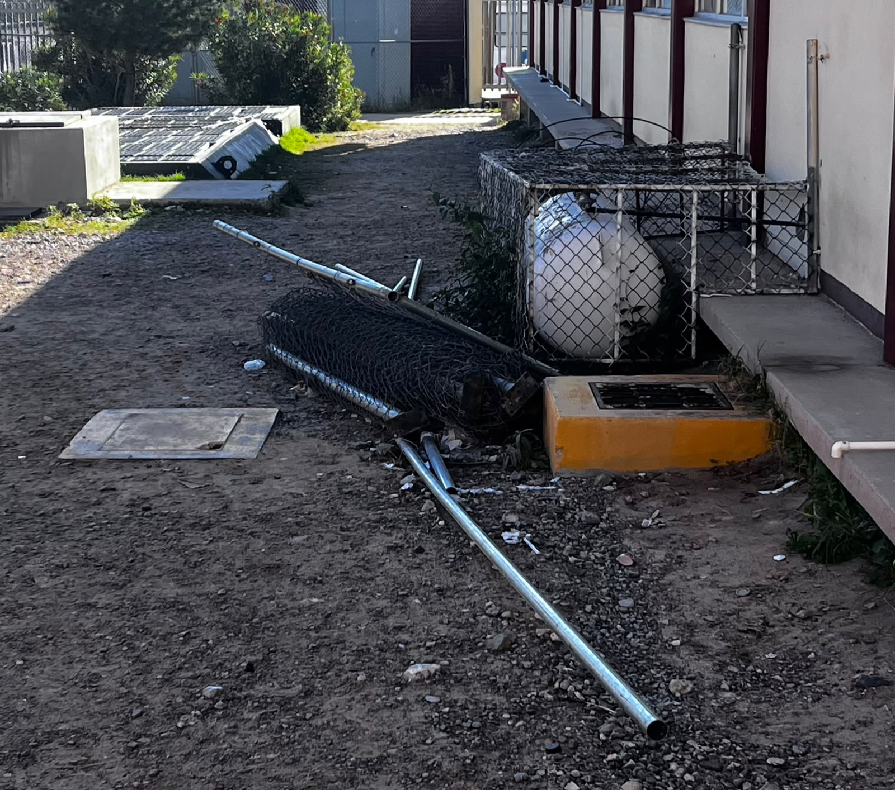
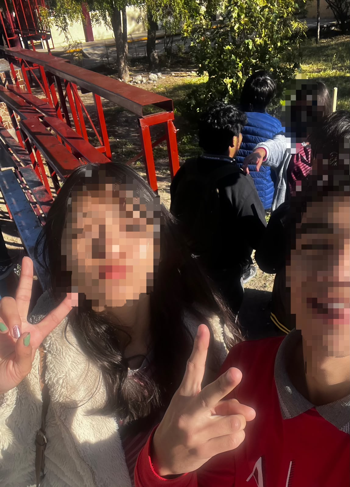
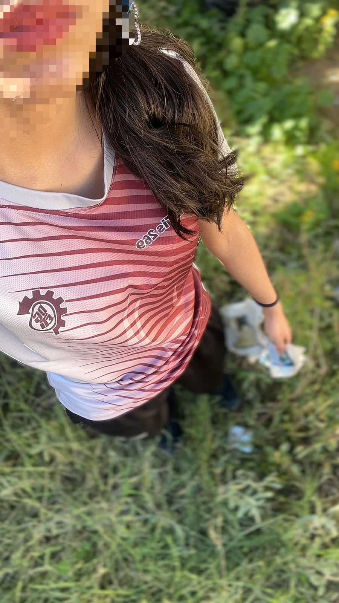
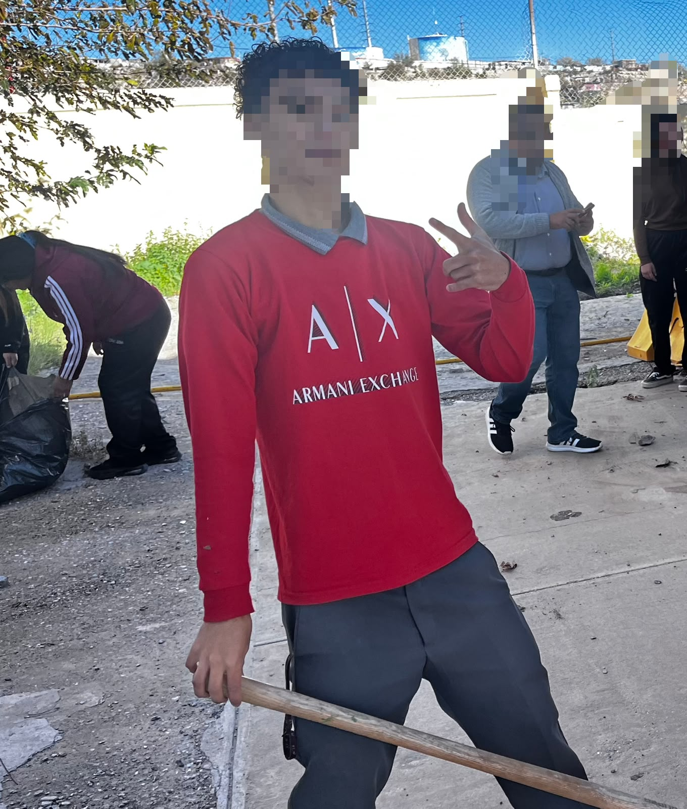
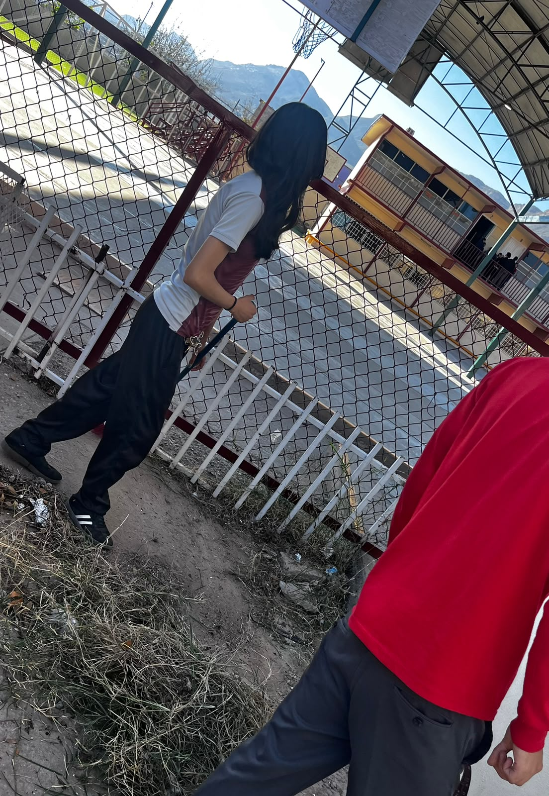
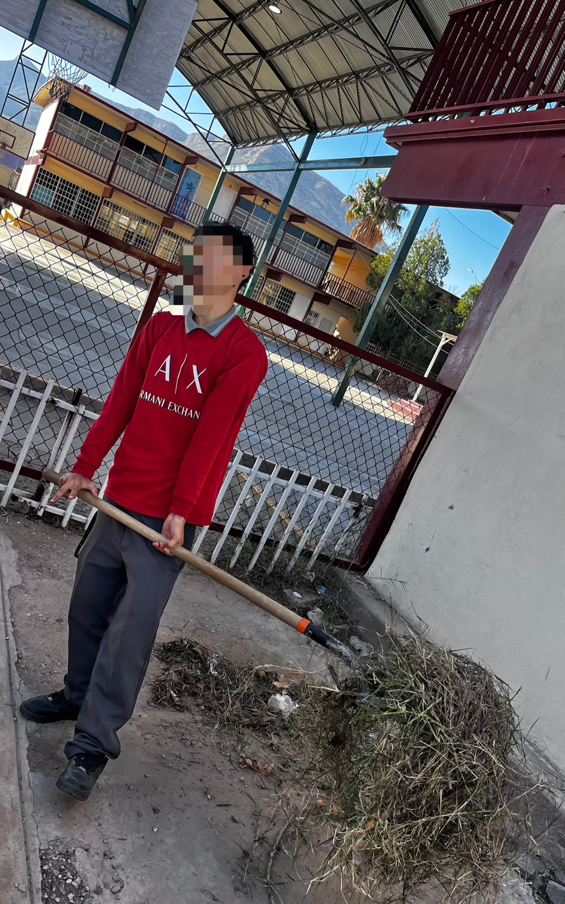

En nuestra vida diaria dentro del plantel se generan principalmente:
Consulta cómo se clasifican estos residuos según su composición.
La mayor concentración de residuos suele presentarse en zonas donde se pasa más tiempo o descanso, tales como:


Entre los principales retos que enfrentamos están que muchos residuos se depositan mezclados en un mismo bote, el uso frecuente de envases desechables, la falta de hábito constante para separar materiales reciclables y el impacto visual o ambiental en las áreas verdes y espacios escolares.
Como parte de nuestra participación en el proyecto PAEC de nuestro plantel, fuimos a distintas escuelas a ayudar limpiando ciertas áreas, a mi compañero y mi nos toco ir a la Secundaria Federal 7, donde estuvimos limpiando el día Jueves 19 de Noviemnbre 2026.




